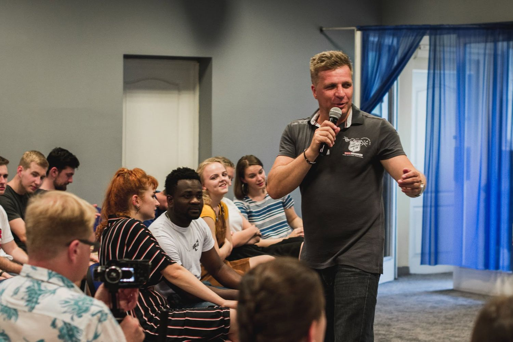
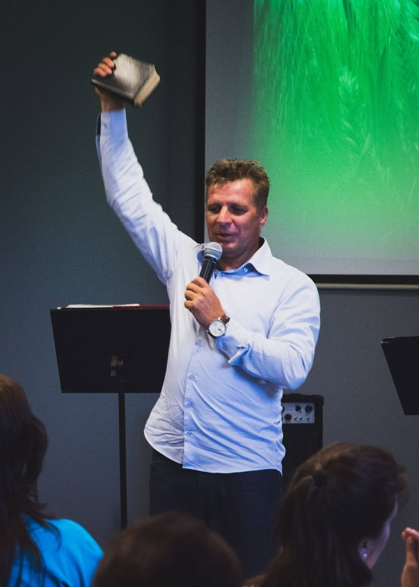

Bible
Bible je inspirované Boží slovo a nejvyšší autorita pro víru i každodenní život.
Jsme společenství křesťanů v Třinci. Věříme, že křesťanství není soubor pravidel, ale živý vztah, který proměňuje běžný život.
Sbor Víry vznikl v Třinci v roce 2002. Snažíme se pomáhat lidem při hledání smyslu života a křesťanských hodnot. Odpovědi na své otázky mohou najít v Bibli — základem naší práce je proto důkladné seznámení s texty Písma.
Poznání Božího slova formuje průběh našich setkání a věřícím dává odpovědi na otázky každodenního života, ať už jde o rodinu, mezilidské vztahy nebo práci. Pomáháme také lidem, kteří se dostali na okraj společnosti, vrátit se do plnohodnotného života.
Pořádáme veřejné přednášky, a to i s hosty ze zahraničí, kteří zastupují obdobná křesťanská hnutí. Promítáme filmy s duchovní tematikou pro širokou veřejnost a pořádáme koncerty a hudební večery. Máme početné kontakty na církve a organizace v Česku, Polsku, Maďarsku a na Slovensku.
Věříme, že návrat ke skutečným křesťanským hodnotám je prospěšný celé společnosti — v generaci současné i budoucí.

Toužíme pozitivním způsobem ovlivnit naše město tím, že tvoříme křesťanské centrum, ve kterém mnoho lidí nalezne své místo, posílí naději a zatouží žít pro Boha a pro druhé.
Chceme také změnit obraz křesťanství v Česku — ukázat, že Bůh nemá nic společného se středověkým náboženstvím, ale působí mezi námi současným, fascinujícím způsobem. Církev není chrám ani zkostnatělé obřady, ale především Jeho rodina. Ježíš netvořil organizaci; dal nám možnost osobního setkání s Bohem Otcem.
Toužíme, aby mladí lidé, kteří od života chtějí něco víc, stavěli na Něm a na Jeho slově.
Nejde o vyčerpávající teologický dokument, ale o jádro, které nás drží pohromadě.
Bible je inspirované Boží slovo a nejvyšší autorita pro víru i každodenní život.
Věříme v jednoho Boha, který se zjevuje jako Otec, Syn a Duch svatý.
Ježíš je Boží Syn. Zemřel za naše hříchy, byl vzkříšen a žije.
Spasení je Boží dar z milosti, který přijímáme vírou — není to odměna za naše výkony.
Duch svatý dává sílu žít křesťanský život a obdarovává církev pro službu druhým.
Církev je rodina, ne budova. Je to společenství lidí, kteří patří Kristu i sobě navzájem.
Ježíš se vrátí. Smrt nemá poslední slovo a to mění způsob, jak žijeme dnes.
Vede křesťanské centrum Sbor Víry od jeho vzniku v roce 2002. Narodil se v Třinci, povoláním je stavař. Svou vášeň a povolání našel v budování silné a novodobé místní církve.
Obrátil se v patnácti letech na výjezdu oldřichovické evangelické mládeže, kde působil až do roku 1989. Poté se zapojil do charismatického hnutí a od roku 1992 vedl Sbor Siloe při Apoštolské církvi. Ukázalo se však, že ho Bůh obdařil průkopnickou povahou a povoláním reformátora — touha udělat pro Boha a pro věřící něco, co v okolí nikdo předtím neviděl, ho přivedla k založení Sboru Víry.
Je talentovaným řečníkem a inspirátorem. Káže Slovo naplněné vírou a nadšením, ale také s notnou dávkou humoru. Střízlivost mysli, moudrá změna života, poznání Božích zásad a práce na charakteru — to jsou hlavní témata, o kterých mluví.
Dlouhá léta sloužil společně s manželkou Marcelou, která nečekaně zemřela v lednu 2024. Jejich vytrvalost, věrnost Slovu, angažovanost a nekončící optimismus pomohly mnoha lidem objevit víru v Boha a v Jeho slovo. Oba věřili v církev jako tělo tvořené z lidí — neusilovali o přílišnou popularitu, ale stavěli na týmové práci. Pracovat s lidmi a pro lidi: v tom pastor Petr dodnes vidí smysl své služby.

Nemusíte se hlásit dopředu, nemusíte nic přinášet a nemusíte nic vědět. Stačí přijít.